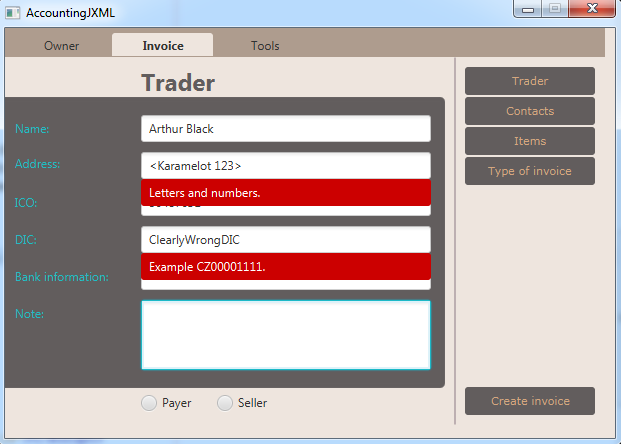
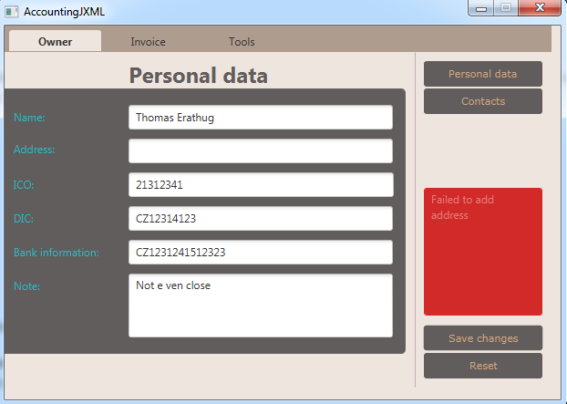
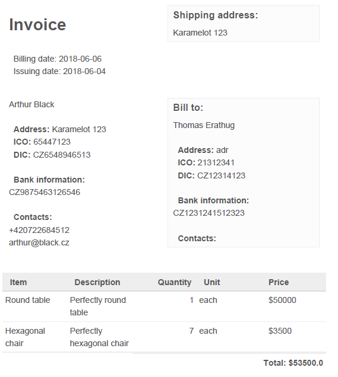

Functionality is the middle layer between GUI and Database. As such this layer has to connect all requests from users and store/read data from database. It is very important to keep database from containing inconsistant data so the functionality layer is where all the data are checked. We run two tests before the input data is stored into our database.
Testing text inputs the user is typing into our forms. This is done with use of regular expressions. There we set a pattern which every text field must follow.
Those are run to test if all required text fields are filled with valid input and if stored would create one valid entry.
Exporting to PDF allows simple way how to see all your Invoices. User sets up from/to dates and application makes pdf file with all invoices between selected dates and counts total profits/losses.
